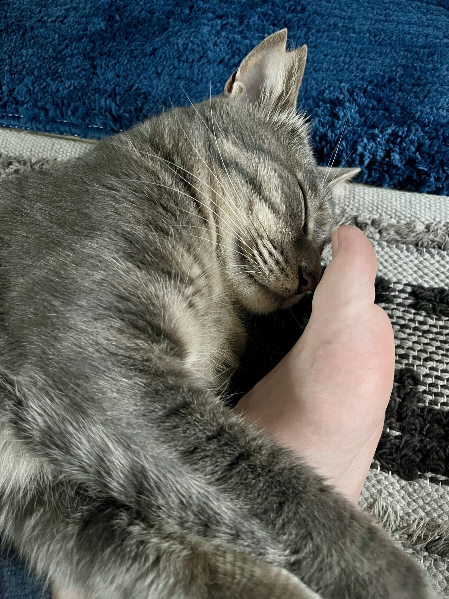
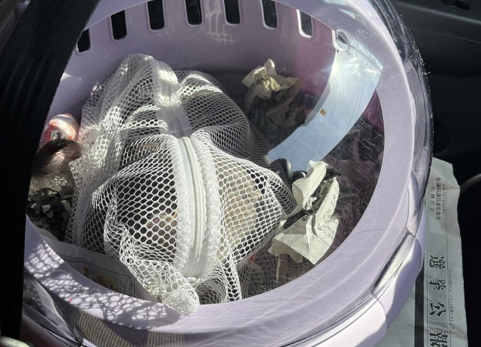
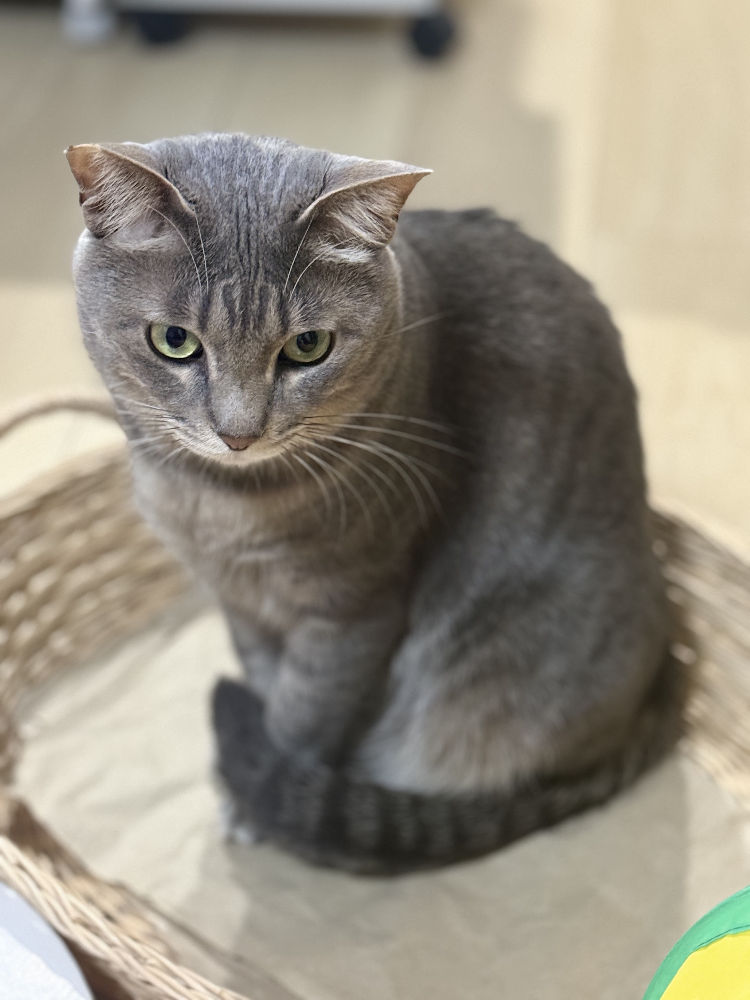
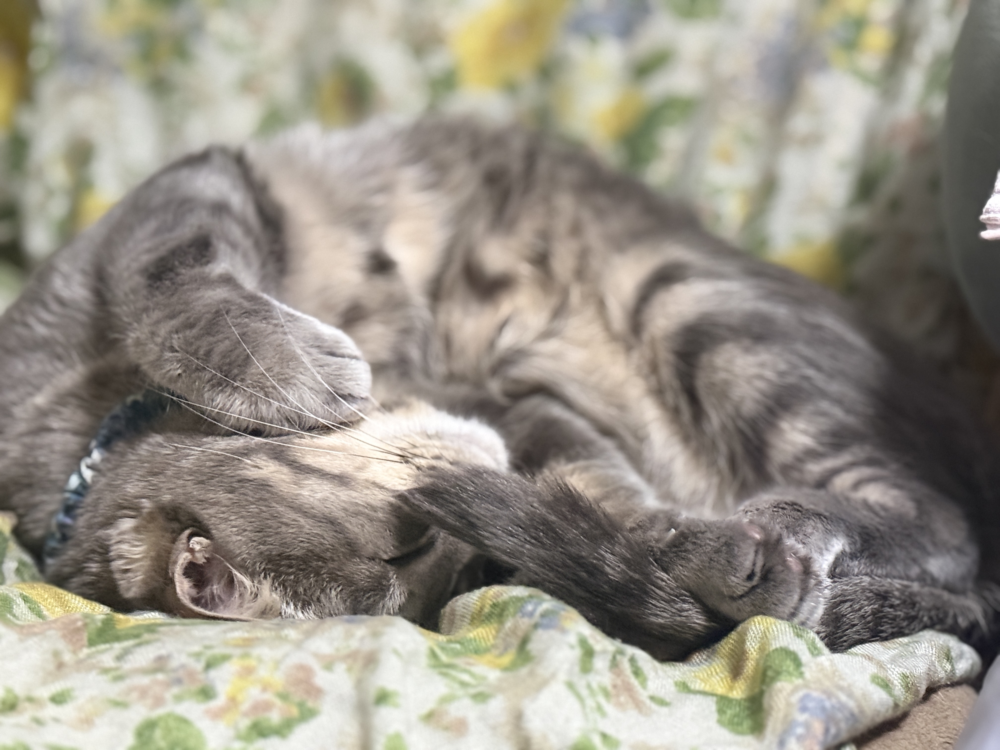
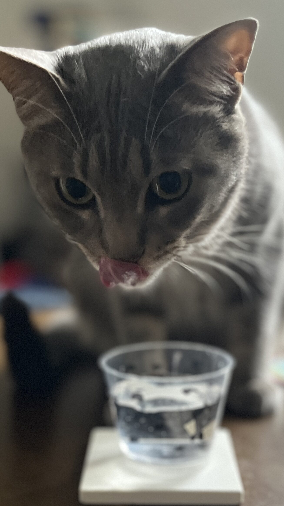

彼奴は桜猫
岐阜県は揖斐川町で産まれ、（保健所行きから生還し）神戸町で預られ、大垣市の端っこで暮らす。生粋の岐阜県民。ブルベサマーな五黄のとらねこ。
飼い主と生い立ちまでそっくりで、お揃いがいっぱいの保護猫である。
地元とはいえ、未知なる地で暮らすのもおんなじ。
彼奴を初めてみた瞬間、びびびときたんだよ。
名前は既に頭の中にあって、おまえさんだったのか！と。

2023年5月27日、1歳になったばかりの彼奴は保護主さん宅からわが家へ。
この保護主さん、その道30年の大ベテランで現役の保護活動家。岐阜県といえばネコリパブリックであるが、もちろん提携されているようだった。各務原の譲渡会へ行ったり、捕獲に行ったり、仔猫を預かったり…頭が上がらない。人はタダに甘えがちだ。それは行政も同じなようだった。各自治体の助成はもちろんだが、優しい人に押し付けるこの社会について改めて考えるきっかけに。
元飼い主は80代のおばあちゃん。管理しきれず繁殖。三世帯同居の家庭に産まれた彼奴。こちらの息子さんが保健所へ連れて行ったところを保護された。家族が繁殖させた生物を、保健所に持っていける感覚がわたしには解らない。が、そんな人もいるのだ。多様な人間がいる。他者は変えられない。しかし、共存せねばならないのだ。受け入れられなくても。
ここらへんには野良ちゃんもたくさんいて、広い空と田んぼを見ながら彼奴らに思いをはせる。
我々のような仕事をしている人は、どこか猫的な人が多い。実際、「アーティストが愛した猫」やら「文豪の猫」「作家の猫」なんて書籍はたくさん存在しているし。
マクロはマイクロで、マイクロはマクロ。
野性を持ち続けるイエネコから学ぶことはとても多い。


